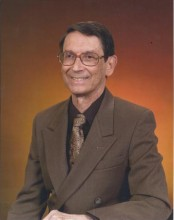

Please note: the AAS Obituaries are temporarily being hosted on this website while their full content is being ingested into the PubPub publishing platform newly adopted by the Bulletin of the American Astronomical Society. When the migration is complete, your existing links will take you to the final, migrated content. Contact peter.williams@aas.org with any questions.
Conrad R. Sturch (1937-2014)
Reprinted with permission from Candle Light Funeral Home.
Conrad R. Sturch, an astronomer and dedicated churchman, died June 13, 2014 at Charlestown Retirement Community in Catonsville, Maryland. He was 76.
Conrad Ray Sturch was born in Cincinnati, OH on November 5, 1937 to Reverend Ray C. Sturch, a tent-maker pastor, and Esther C. Sturch, an artist and homemaker. He attended public schools in several towns in southwestern Ohio as his father moved from parish to parish. He graduated from Milton-Union High School in 1955.
He earned his Bachelor of Arts degree in math and physics from Miami University of Ohio (Oxford, OH) in 1958 and received his Master of Science in physics from Miami U. in 1960. He was elected to Pi Mu Epsilon, Sigma Pi Sigma, and Phi Beta Kappa honoraries. He relocated to the University of California at Berkeley to pursue a doctorate in astronomy which he completed in 1965. He was a member of Sigma Xi. While living in Berkeley he met his future wife, Sharon Hocker, singing together in a local church choir. They married in September of 1962.
Dr. Sturch’s first teaching appointment was at the University of Rochester (NY) in the Physics and Astronomy Department, where he also continued his research on red-shifting of galaxies. In 1973 he and his family moved to London, Ontario (Canada) where he taught at the University of Western Ontario for one year, then to Clemson University (SC) for two years.
In 1976 he accepted an offer from Computer Sciences Corporation to join in support of the HEAO orbiting observatories mission under contract with NASA and moved to Rockville, MD. He wrote part of the proposal to NASA that resulted in the location of the Space Telescope Science Institute at the Johns Hopkins Homewood Campus and in 1981 he started his 21-year span of service at the Institute. He was a co-author of both Guide Star Catalogs developed for use by the Hubble Space Telescope and subsequent orbiting and ground-based telescopes. He retired from CSC and STScI in 2002.
In retirement he volunteered with the pastors of his church, St. John’s United Church of Christ in Catonsville, for outreach services to St. Elizabeth and Brightview retirement facilities. For 25 years he sang in his church’s choir and a small a capella ensemble, and occasionally played piano for Sunday services.
Survivors include his wife of 51 years, his daughter Kathryn Sturch of San Diego, CA, a great aunt in Arkansas and numerous cousins in the Midwest.
BAAS Citation: BAAS, 2014, 46, 014